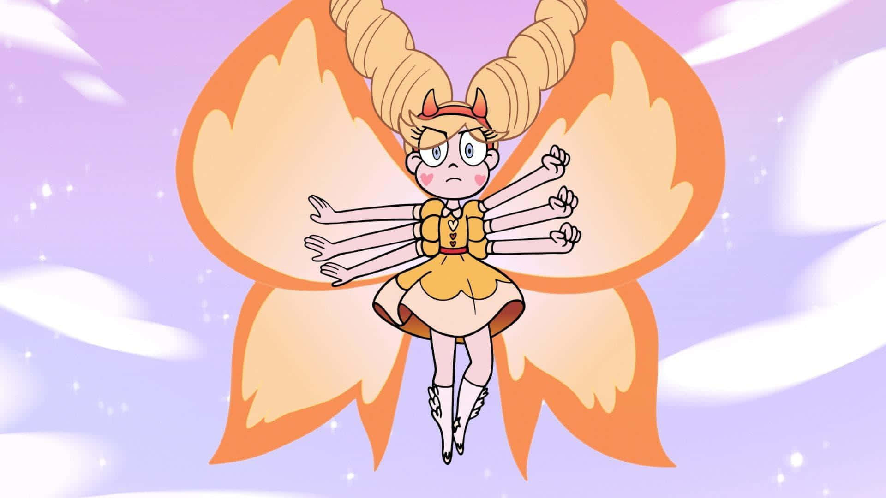
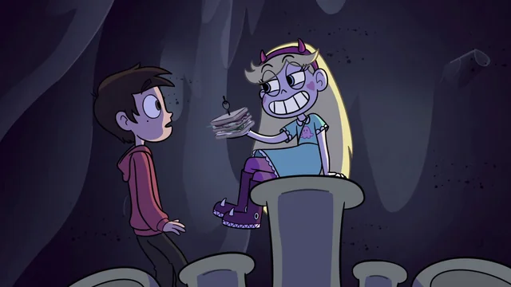
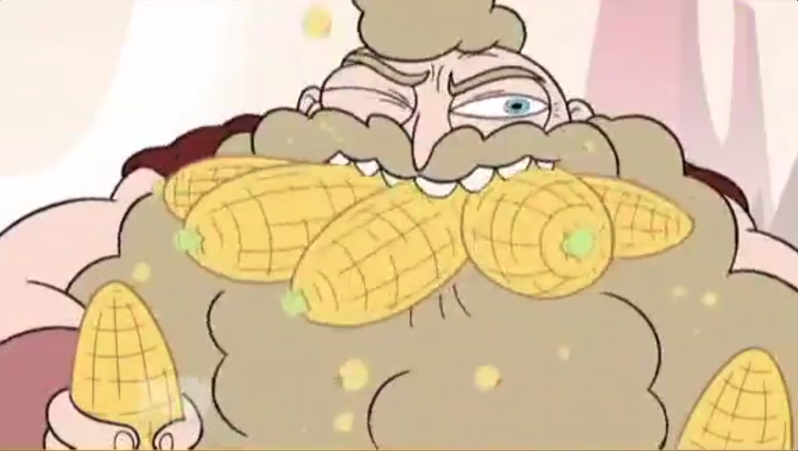
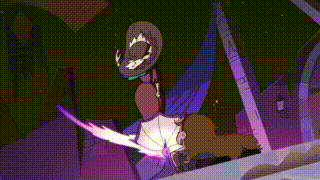
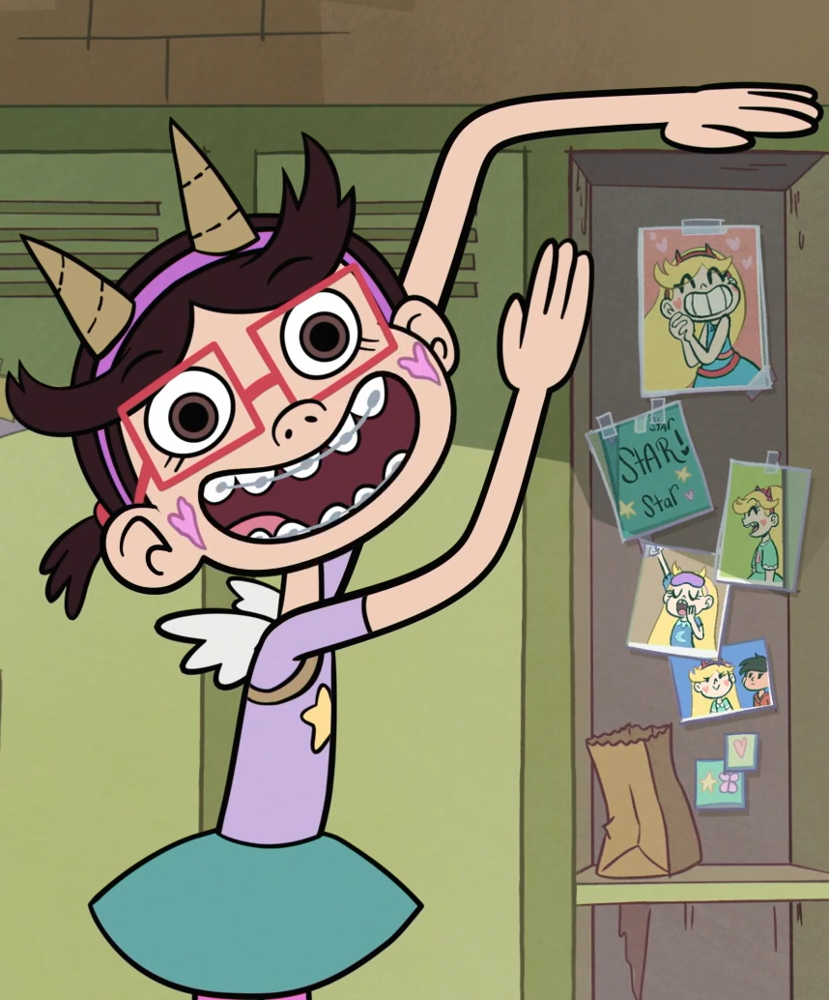

Poder sin varita: Star es una de las pocas reinas (técnicamente princesa) que aprendió a "excavar profundo" y usar magia sin necesidad de la varita a una edad muy temprana.

Poder sin varita: Star es una de las pocas reinas (técnicamente princesa) que aprendió a "excavar profundo" y usar magia sin necesidad de la varita a una edad muy temprana.

El sándwich de Marco: El famoso "Sándwich de Marco" que aparece en la serie es una receta real que Daron Nefcy y su esposo suelen preparar en casa.
El código de colores: Los colores de los hechizos de Star suelen reflejar sus emociones: rosa para el amor o alegría, y verde cuando siente celos o usa magia oscura.

El origen del maíz: La obsesión de Mewni con el maíz nació de una decisión aleatoria de los directores de arte, quienes colocaron un cartel de "Maíz" en un fondo. A los guionistas les hizo tanta gracia que lo convirtieron en la base de toda la economía y cultura del reino.

Homenaje a Mary Poppins: El hechizo de levitación que utiliza Eclipsa (llamado "Shack") es una referencia visual directa a la forma en que Mary Poppins vuela con su paraguas.

Starfan13 es especial: El personaje de Starfan13 no es solo una parodia de los fans intensos, sino que su voz la pone la propia creadora, Daron Nefcy, quien además pidió que el personaje se pareciera físicamente a ella.